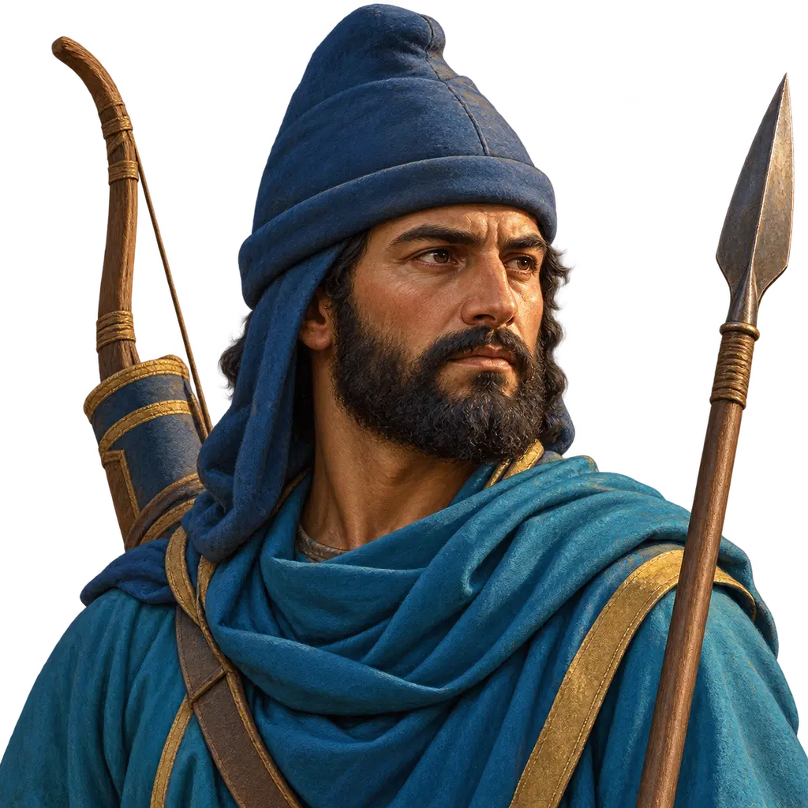
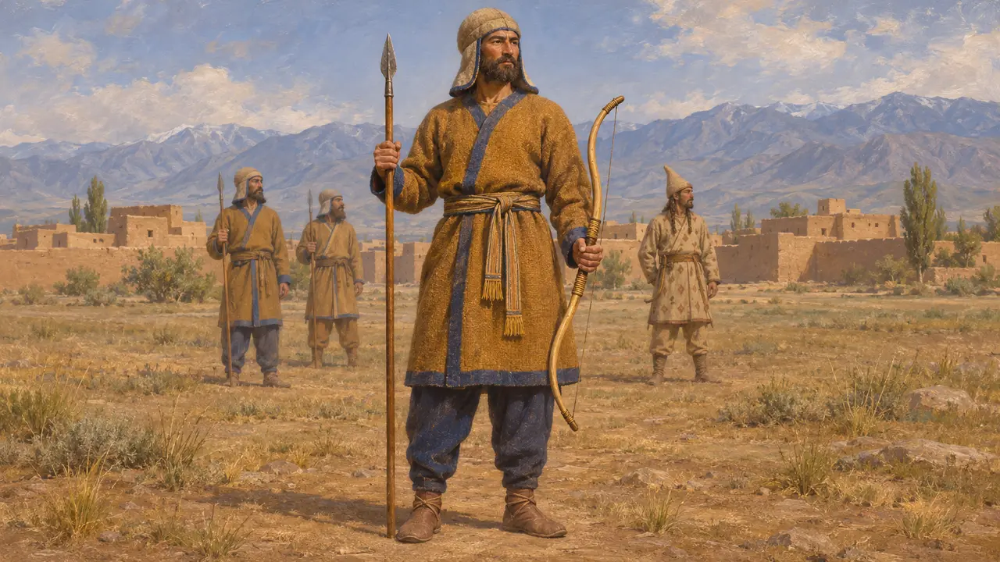
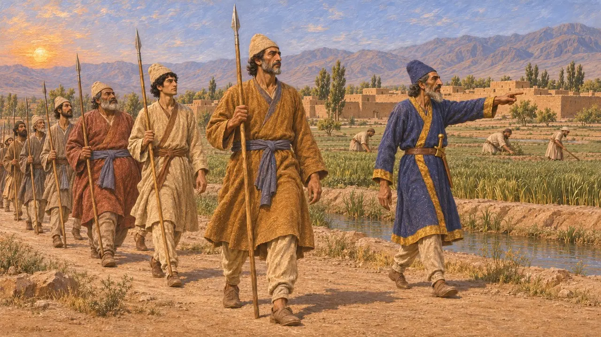
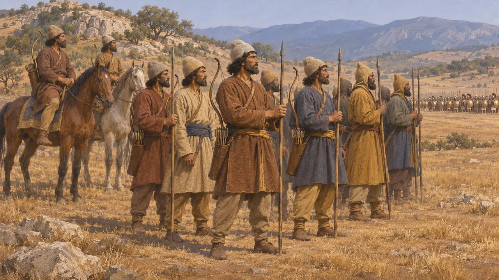
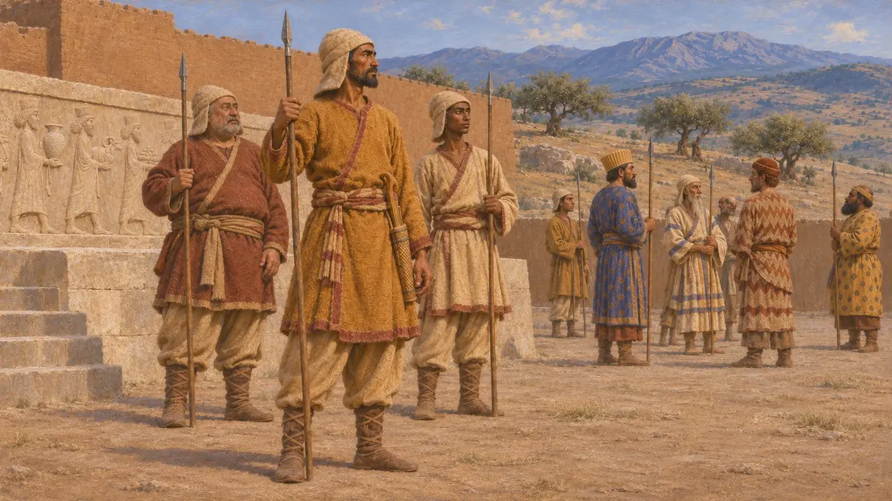

Enciclopédia › Soldados e navios

Lanceiro Bactriano
Soldado de infantaria da Báctria no exército real persa, c. 520-479 AEC
No jogo: Nível 11: O Final
A Báctria, a rica terra entre o Hindu Kush e o rio Oxo, era uma das grandes províncias orientais do Rei, e seus homens marcharam no exército de Xerxes contra a Grécia em 480. Heródoto os descreve com arcos de cana e lanças curtas. Os bactrianos permaneceram na Grécia com Mardônio depois de Salamina e lutaram em Plateia em 479.
No jogo: O jogo faz do bactriano um combatente leve, rápido e sem escudo, que caça arqueiros e perde para hoplitas. Heródoto menciona o arco de cana e a lança curta, mas nada diz sobre escudos, e o papel no campo de batalha é uma simplificação do próprio jogo.

Armas e trajes no catálogo de Heródoto
Relato antigoEm sua lista das forças de Xerxes, Heródoto diz que os bactrianos usavam toucados muito parecidos com os dos medos. Diz que carregavam arcos de cana de sua própria terra e lanças curtas. Os bactrianos e os sakas serviam juntos sob um único comandante, Histaspes, filho de Dario e Atossa. Heródoto não menciona escudos nem armaduras para eles.
Herodotus 7.64

A Báctria nos registros persas
Nos registrosA inscrição de Behistun de Dario cita a Báctria entre as terras que lhe obedeciam. Durante as revoltas de 522-521, Dadarshi, o sátrapa persa da Báctria, marchou contra os rebeldes na vizinha Margiana e os derrotou. Em sua carta de construção de Susa, Dario diz que o ouro usado no palácio veio de Sardes e da Báctria.
DB §6; DB §38; DSf

Bactrianos na Grécia, 480-479
Relato antigoHeródoto conta que, no exército de Xerxes, os bactrianos também enviaram cavaleiros, equipados da mesma forma que seus soldados de infantaria. Depois de Salamina, diz ele, Mardônio escolheu bactrianos de elite para permanecer na Grécia durante a campanha do ano seguinte, junto com persas, medos, sakas e indianos. Em Plateia, ele os posiciona ao lado dos medos, diante de tropas de várias cidades menores do Peloponeso.
Herodotus 7.86; Herodotus 8.113; Herodotus 9.31

Até que ponto se pode confiar no catálogo
DisputadoOs historiadores discutem se a lista de nações de Heródoto reflete unidades reais sobre as quais ele tinha informações ou um rol idealizado dos povos do império. Alguns estudiosos a comparam às fileiras de povos súditos representadas nos relevos persas. Seus números totais para o exército de Xerxes são em geral considerados muito exagerados. Não se sabe quantos bactrianos chegaram de fato à Grécia.
O. K. Armayor, Herodotus's Catalogues of the Persian Empire, 1978; P. Briant, From Cyrus to Alexander, 2002
Fontes
- Herodotus 7.64
- Herodotus 8.113
- Herodotus 9.31
- DSf
- O. K. Armayor, Herodotus's Catalogues of the Persian Empire, 1978
- P. Briant, From Cyrus to Alexander, 2002